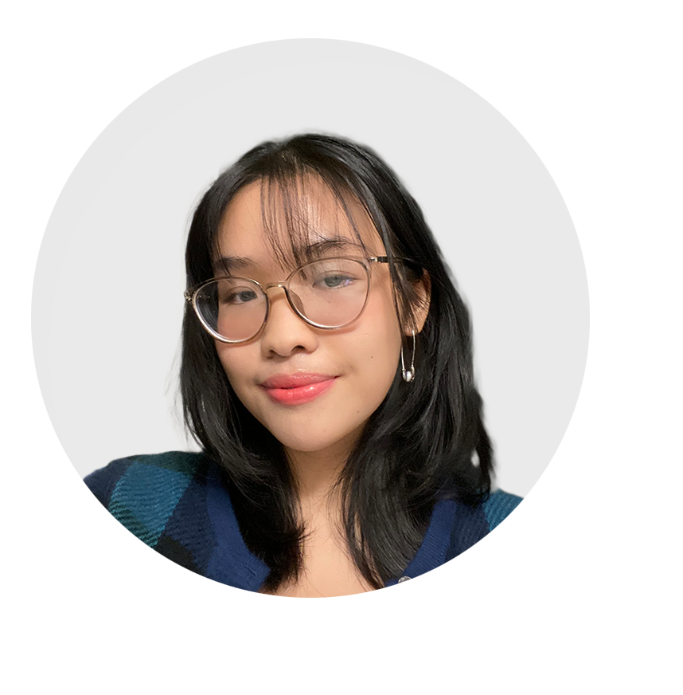

ABOUT ME

I’m Cindy. Thank you for stopping by!
As a UI/UX Designer, I aspire to be someone who creates visually appealing and highly intuitive digital products (websites, apps and more) for businesses.
My works combine my strength in graphic design, traditional and digital collages and extensive use of vibrant colors. I find inspiration from stories from people around me, surreal imaginative scenarios, and vivid daily dreams. I also love incorporating grand narratives in my work.
Design-wise, I’m interested in User-centered design, inclusivity of software design to people with disabilities, sustainability and ethics in web design, and modern, stylized decorative fonts.
DOWNLOAD MY RESUME [PDF]
or read my Resume here
EDUCATION
Drexel University, Philadelphia, PA
Bachelor of Science in User Experience and Interactive Design
Expected Graduation: June 2025
GPA: 3.83
HONORS AND SCHOLARSHIPS
- Westphal Portfolio Scholarship
- Drexel University Founder’s scholarship
- Drexel University Dean’s list
Winter 2021 - Present
PROFESSIONAL SKILLS
TECHNICAL
- Adobe Creative Suite
- HTML/CSS
LANGUAGE
- English (Fluent)
- Vietnamese (Fluent)
- German (Conversational)
COURSEWORK
- Design Thinking in Product Design
- User Interface Design I
- Photography
- Intro to Human-Computer Interaction
- Web Design I
- Entertainment and Arts Management
EXPERIENCE
EDUCA CORPORATION, Hanoi City, Vietnam
English Teacher, April-August 2021
- Monitored and managed a class of 24 elementary students who all have different English skills and interests
in learning.
- Consulted parents with their children’s strengths and weaknesses and give out solutions, acquiring 30
one-year tutoring deals for the company.
- Created and assembled quizzes, riddles and physical activities to engage and maximize elementary students’
experience in studying English.
ARTEEN - UNLEASH YOUR TALENT NPO, Ho Chi Minh City, Vietnam
Head Designer, Co-Founder, February-December 2019
- Designed social media posts and physical publications to promote our three events on saving the
environment by the Art, raising more than $2000 and greatly improving community awareness.
- Headed a team of designers to maintain our social media presence with 3 posts in a week, achieving 1.400
followers on our Facebook page.
- Collaborated with other team’s leaders in the organization and sponsors to ensure persistent expectation and
direction of the project.
SAPA HOPE CENTER, Ho Chi Minh City, Vietnam
Designer, Volunteer, August 2019
- Held a voluntary position as a designer and volunteer for the Sapa Hope Center trip.
- Organized a social media donation campaign, exceeding $1000 of donation for our trip and receiving great
love and support for the project.
- Managed the team’s schedule and assembled more than 100 sets of school supplies, books, food and warm
clothes for less fortunate students of Sapa Hope Center.